01 / THE PROBLEM
Operational AI memory layer
A useful internal answer depends on the company’s own processes, terminology, and workflow documentation. A general model does not have that context simply because it can answer a broad question.
The work was to prepare that knowledge for retrieval and connect it to a usable model backend. This is a memory and integration problem as well as an LLM problem.
02 / MY CONTRIBUTION
I built the memory layer, prepared and cleaned the operational documentation, generated vector embeddings, and integrated the model services. The backend included a fine-tuned LLM and integrations with Claude, OpenAI, and Gemini.
03 / ARCHITECTURE
Two paths: prepare knowledge, then use it

Read the Mermaid definition
flowchart TB
subgraph preparation[Knowledge preparation]
D[Internal process documents] --> C[Clean and prepare content]
C --> E[Generate embeddings]
E --> V[(pgvector knowledge store)]
end
subgraph request[Request path]
U[User or MCP client] --> W[Cloudflare-hosted memory layer]
W --> Q[Embed and retrieve context]
Q -. Search vector store .-> V
Q --> K[Relevant company context]
K --> L[LLM backend]
W -->|Request| L
L --> A[Context-grounded response]
end
M[Fine-tuned model] -. Backend component .-> L
P[Claude / OpenAI / Gemini integrations] -. Provider options .-> L
04 / HOW IT WORKS
Prepare the company knowledge
Clean the process and workflow documents before embedding them. Retrieval cannot compensate for source material that is unclear or inconsistent.
Make the knowledge retrievable
Represent the prepared material as embeddings in pgvector. A request can retrieve relevant operational context instead of relying only on the model’s general knowledge.
Connect the model and tool boundaries
The Cloudflare-hosted layer connects retrieval, MCP access, and the LLM backend. The backend has a fine-tuned model and multiple provider integrations.
Answer using internal context
Relevant documentation accompanies the request to the model backend. This gives the response a connection to the business’s actual processes.
05 / ENGINEERING DECISIONS
Memory and fine-tuning have different jobs
The vector store carries retrievable company knowledge. Fine-tuning changes model behavior. A document update should not be described as a model-training run.
Keep the backend behind an integration boundary
A Cloudflare-hosted memory layer does not imply that model training or large-model inference happens inside a Worker. The diagram keeps those services separate.
Data preparation is part of the system
The value depends on which documentation is retrieved and how it represents the workflow. The model API is only one component.
06 / OUTCOME & SCOPE
- Made internal process knowledge available to the LLM backend through retrieval.
- Combined document preparation, vector memory, MCP, and model integrations in one operational system.
Reading this case study
Model identity, training configuration, routing policy, retrieval benchmarks, and response-quality measurements are not published here. No standalone accuracy or time-saving figure is assigned to this system.
Architecture based on my implementation account. The diagram is a logical integration view, rather than a published deployment inventory.
Diagrams are abstracted from the workplace system. Customer records, credentials, internal endpoints, and proprietary source code are not included.